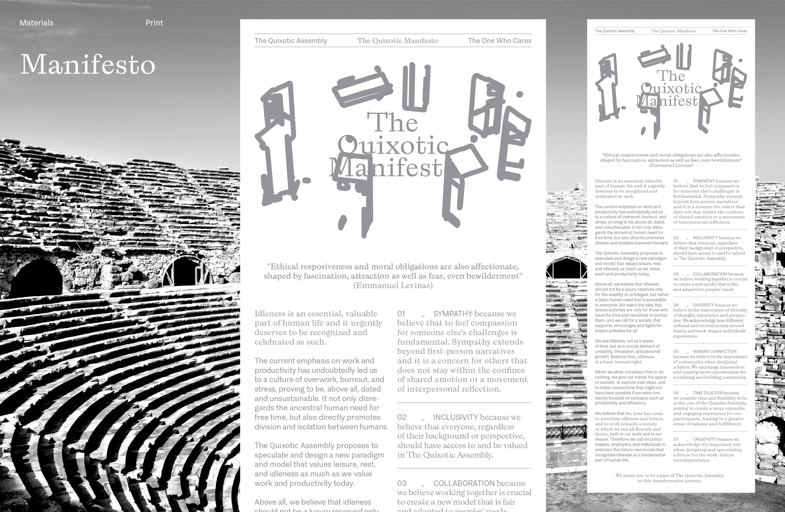
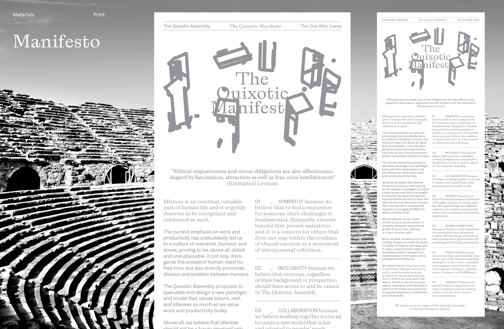
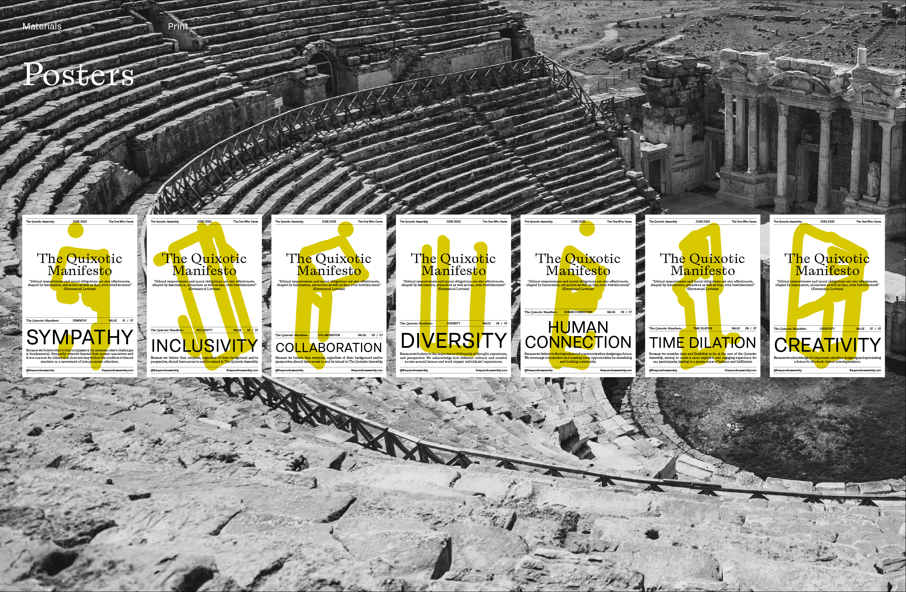
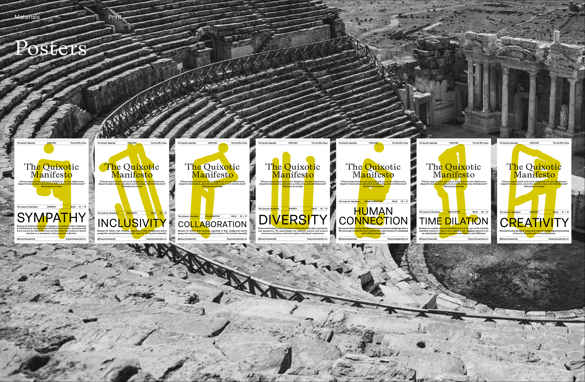
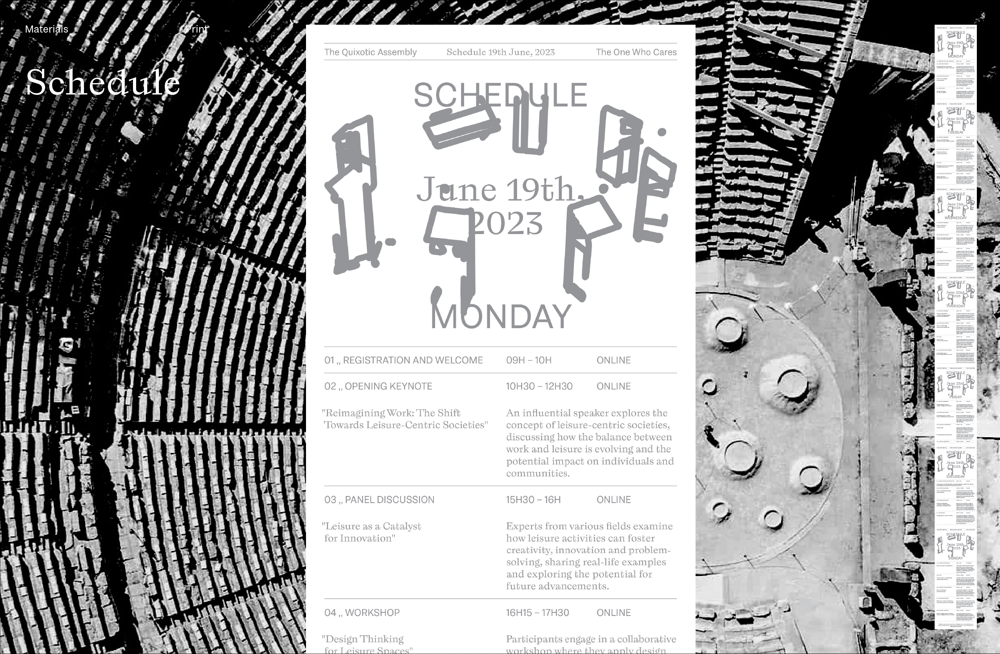
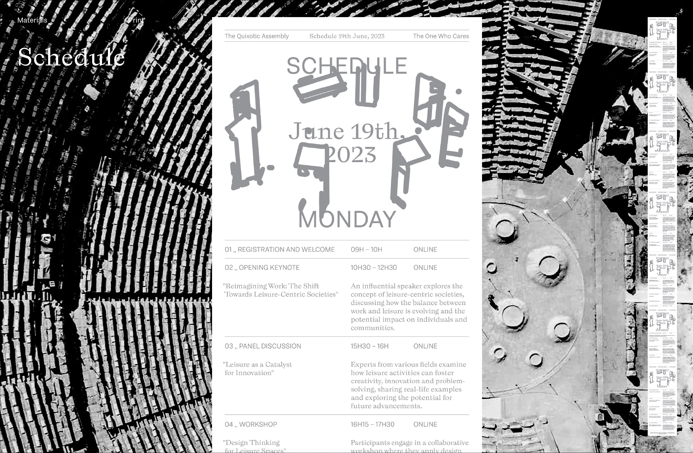
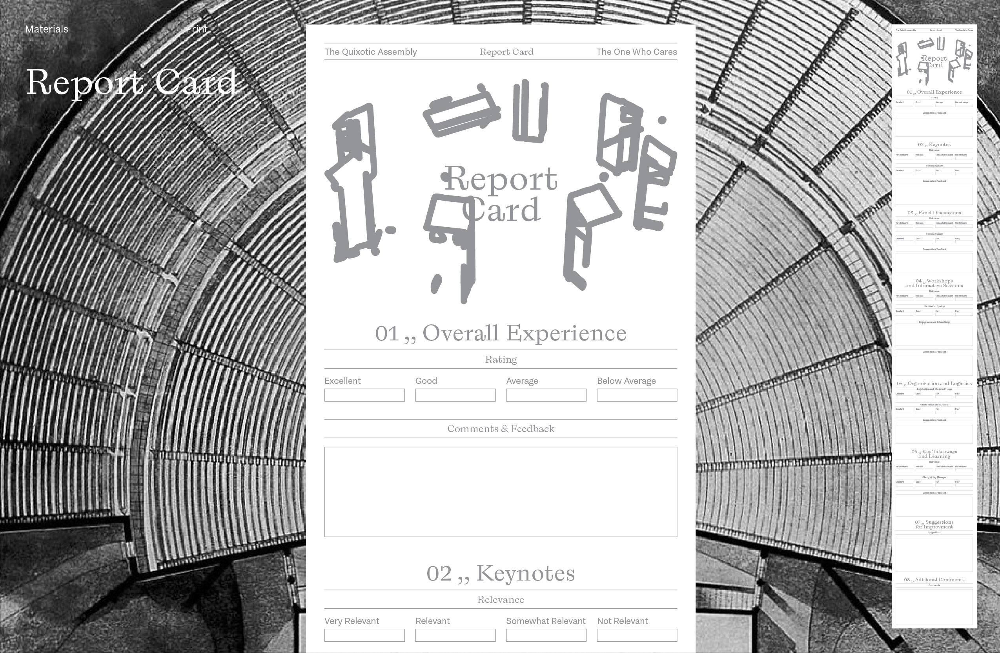
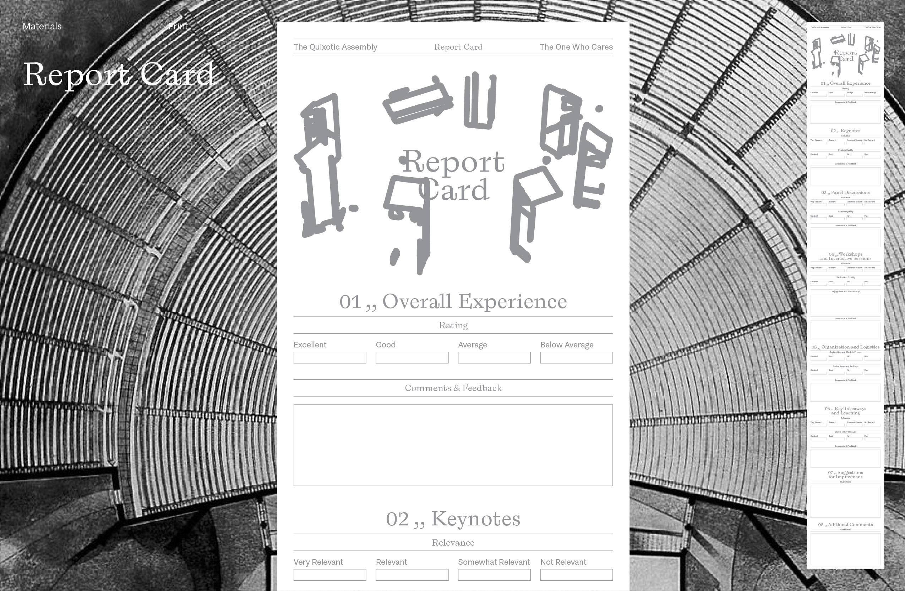

The Quixotic Assembly
The Quixotic Assembly is a pluriversal gathering space that encourages collaboration whilst promoting critical thinking and inclusivity, designed to foster a wide range of perspectives and endless conversations. It lives off of the idea that one day labour might not be the centre of human activity. This assembly seeks to reflect on pain, discomfort, the unavoidable sense of helplessness, lack of meaning, desire and drive that come with uncertainty and transformation.
(2023)
Exhibited on "How I Learned to Stop Worrying and Love the Bomb"
in Galerias Municipais Pavilhão Branco, June 2023
(2023)
Exhibited on "How I Learned to Stop Worrying and Love the Bomb"
in Galerias Municipais Pavilhão Branco, June 2023


 

 

 

 
